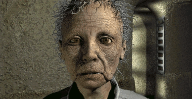
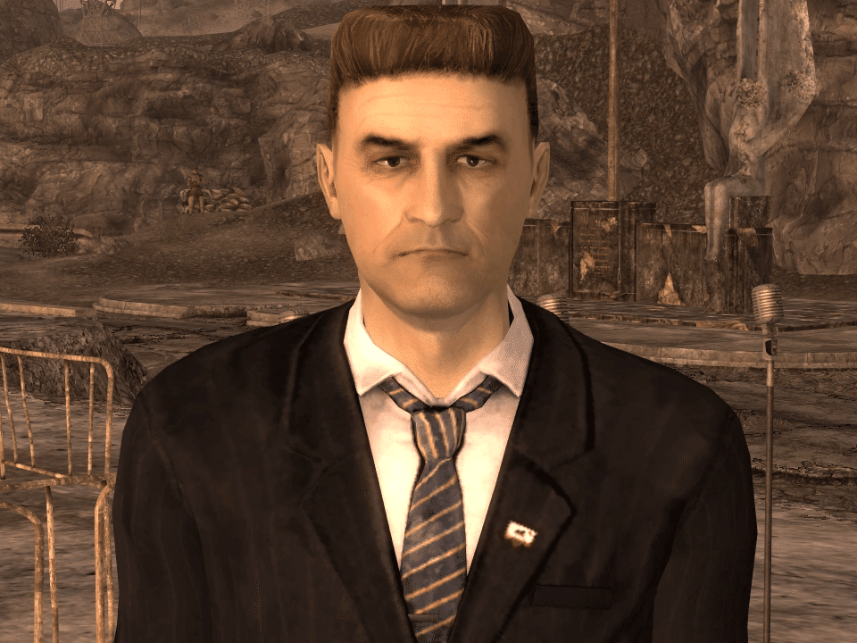
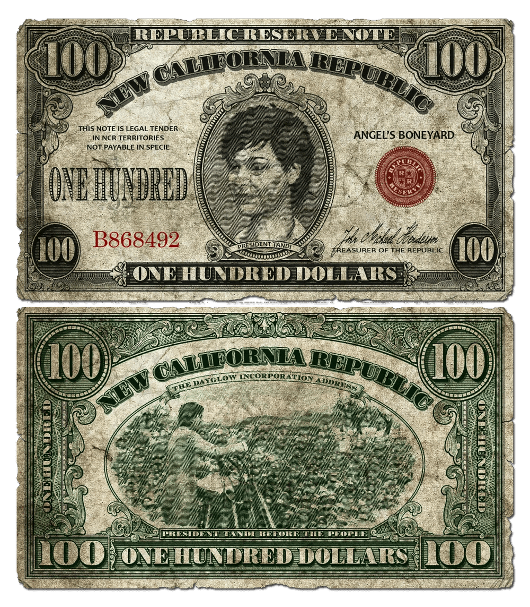
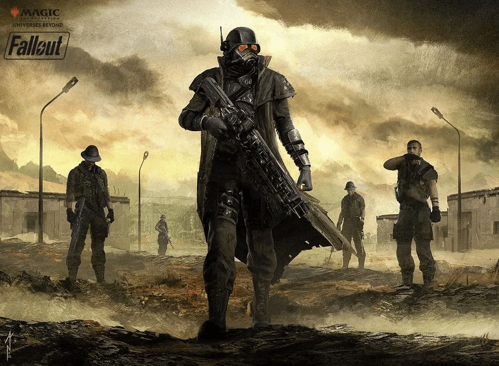
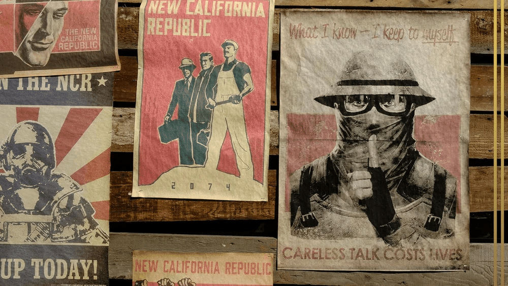

新カリフォルニア共和国(New California Republic / NCR)
2296年現在、シェイディ・サンズ を失ったものの、NCR は完全に消滅したわけではありません。
分裂した NCR の残存メンバーは、依然としてウェイストランド中に散らばっています。
これには、民主主義と法の支配という大義を信じる人々を守り、生き残るために活動を続けている、モハビに留まる1つの歩兵大隊とレンジャーの部隊も含まれています。
背景
新カリフォルニア共和国 (NCR) の歴史は、2097年頃に避難所から現れた Vault 15 の生存者たちがシェイディ・サンズの町を建設したことに遡ります。
Vaultの居住者 (Vault Dweller) の助けを借りてレイダー部族のカーンズが壊滅した後、アラデシュとその娘タンディは、共同体を繁栄へと導きました。
貿易ルートの拡大に伴い文化交流が進み、最終的には国家を形成しようとする運動へと発展しました。
この考えは他のウェイストランダーたちの共感を呼び、大衆の支持を得て、2186年にシェイディ・サンズで 新カリフォルニア共和国 (NCR) が結成され、憲法を起草するための試行評議会政府が設立されました。
3年後の2189年、共和国本隊は廃墟の中の主要な定住地を中心に組織された5つの州の連邦として投票により成立しました。
その5つの州とは、シェイディ、ロサンゼルス、マクソン、ハブ、およびデイグロウです。

建国から1世紀以内に、NCR はポスト・アポカリプスにおける成功と良好な倫理のモデルケースとなりました。
着実な拡大と発展により、広範な政治的参政権、法の支配の確立とその執行、内外の脅威からの安全確保（妥当な範囲で）、そして単なる生存を超えた生活水準が、70万人を超える巨大な市民人口にとって現実のものとなりました。
モハビ・キャンペーンとフーバーダムからの電力と水の供給により、状況はさらに改善されましたが、長期にわたるキャンペーンは大きな代償を伴いました。
タンディ大統領の死後、NCR は急速な経済成長と劇的な政治的変化を経験し、本来の壮大な理想を危うくする過渡期に入りました。
歴代の大統領の下で拡大政策が始まり、その変化の最大の例が道徳的に腐敗した帝国主義的な モハビ・キャンペーンでした。

アーロン・キンバル大統領が推進したこのキャンペーンは、ニューベガス とその周辺地域を NCR の第6の州として一方的に併合することを目指していました。
長年の遠征は膠着状態に陥り、ニューベガス条約によって NCR はニューベガスを シーザー・リージョンから守る保護者となりましたが、ニューベガス・ストリップからの税収や、その所有者であるロバート・ハウス からの譲歩は一切得られませんでした。
B.O.S.および シーザー・リージョンとの戦争は NCR を疲弊させ、供給ラインの延長、不当利得、政治的駆け引きが新たな脅威への対応能力を制限する一方で、ニューベガスは観光客、商人、幸運を求める者、そして NCR の兵士たちがもたらす商業の恩恵を受けました。
さらに、グレート・カーンズとの衝突中に NCR がビター・スプリングス の定住地で引き起こした虐殺は、男性、女性、子供が区別なく殺害され、共和国とその軍隊に暗い影を落としました。
しかし、NCR を危機に陥れたのは第2次フーバーダムの戦いではなく、2283年のシェイディ・サンズの予期せぬ前例のない破壊でした。
首都の喪失、および NCR 元老院、NCR 評議会、OSI といった主要な政府機関の消滅は、NCR をフリーフォール（自由落下）の状態へと突き落としました。
2296年までに、ボーンヤードにおける彼らの存在感は、グリフィス天文台に拠点を置くリー・モルデイヴァー指揮下の軍事部隊と民間人難民キャンプにまで縮小し、最終的に B.O.S. による強襲で壊滅しました。
この時点まで、NCR の遺産は、Vault 4 の NCR 難民や、自らを「ザ・ガバミント」と称するロサンゼルスのギャングなど、新カリフォルニアの様々な小さなグループを通じて生き続けました。
社会
抽象的に言えば、NCR は進歩を象徴しています。
組織化されていないウェイストランダーや部族民が自給自足の農業に頼り、日々の生活で困難に直面している一方で、NCR の市民はウェイストランドの他の人々には手に入らない贅沢品、すなわち大規模で安定した経済、ヘルスケア、法律、組織化された安定した政府、そしてポスト・アポカリプスの世界で最大として知られる軍隊へのアクセスを得ています。
全盛期には、共和国のすべての市民が単なる生存以上の生活を送る相応のチャンスを持っていました。
経済力は、2241年から2281年の間の社会変革における重要な要因の一つでした。
大多数の市民にとって生存が主要な懸念事項ではなくなったため、集団の福祉という問題は、個人の繁栄という懸念に大きく取って代わられました。
無償でサービスを提供する人々は今や稀であり、仕立屋から外科医に至るまで、熟練労働者は日常的にサービス料を請求しています。
さらに、80年以上にわたるスカベンジングの結果、新カリフォルニアの荒野からは回収可能な物品がほとんど一掃されました。
スカベンジングや狩猟だけで生計を立てている市民は珍しい光景となりました。
これらの文化的および経済的要因の組み合わせにより、賃金労働が再誕生しました。
ほとんどの市民は製粉所、工場、または農場で雇用主を探し、生存に必要な賃金を得るために働かなければなりません。
共和国の国旗はカリフォルニア州旗に直接インスピレーションを得ており、草地に立つカリフォルニアグリズリーベアが描かれています。
初期の旗はイザインが大きく異なっていましたが、2241年に見られた最初の旗には、カリフォルニア州のシルエットの上に2つの頭を持つグリズイーベアが描かれ、背景に「NCR」の文字、左上に赤い星、下部に赤いバーがありました。
2281年までには、より直接的にカリフォルニア州旗に似たシンプルなデザインとなり、主な違いは2つの頭を持つクマと、「New California Republic」と修正されたキャプションです。
クマは NCR の強さと回復力の象徴であり（批判者は2つの頭が互いに争っていると言うかもしれませんが）、大統領専用のベルチバードは「ベア・フォース・ワン」と特定されています。
自由と解放の原則に基づき、共和国は長年にわたりこれらを実践してきました。
最も重要な成果は、NCR 領土内での奴隷制の禁止です。
ただし、刑罰労働は依然として規定に残っており、この偉大な成果を損なっています。
タンディ大統領の下では、一人が所有できる家畜の頭数や土地の面積を制限する法律が可決され、家畜業者協会や共和党農民委員会 の権力を制限していました。
また、性別、民族、性自認、宗教的信念に基づく迫害や差別を禁止する法律も成立しました。
2205年にはグールやその他の変異体にも保護が拡張されましたが、こうした保護の執行は不十分でした。
経済と通貨
NCR の市場経済は、巨大なバラモンの群れと、耕作可能な状態に復元された広大な土地という2つの資源に基づいています。
その結果、牧場主や農場主が大きな影響力を持っていました。
アーロン・キンバル大統領の時代には、富裕な農場主や牧場主（一般にバラモン男爵として知られる）が莫大な影響力を及ぼすようになりました。
NCR は23世紀の初め頃に独自の貨幣を導入し、当初は金から鋳造された硬貨に依存していました。
2241年までに、NCR の経済は西海岸を支配し、硬貨は普遍的な通貨となりました。
しかし、B.O.S.との紛争中、辺境にある NCR の金準備が襲撃されたため、NCR は新しい金貨の鋳造を停止せざるを得なくなりました。
これにより NCR の紙幣は金によって適切に裏付けられなくなりました。
市民はパニックに陥り、残りの金準備から紙幣の額面価値を回収しようと急ぎました。
NCR がこれらの払い戻しを実現できなかったため、通貨への信頼は著しく低下しました。

インフレーションを封じ込めるため、政府は金本位制を廃止し、正貨で支払われない不換紙幣を確立しました。
これに対し、ハブの商人連合は独自の通貨であるボトルキャップを再確立し、それを水で裏付けました。
2281年時点で、NCR ドルは水に裏打ちされたキャップの約40%の価値しかありません。
軍事

大統領と議会に従属する NCR の軍隊は、その最も特徴的な要素の一つです。
中核となる NCR 陸軍は、数千人の現役兵を擁していました。
彼らは師団と大隊に組織され、標準化された武器とアーマーを装備していました。
また、エリート部隊として NCR レンジャーが存在します。
彼らは新カリフォルニアにおける奴隷制の根絶に捧げられた準軍事的な廃止論者自警団から成長しました。
彼らはウェイストランドで最もプロフェッショナルで致命的な軍事組織の一つとなり、陸軍の軍事指揮下に組み込まれました。
領土
NCR は5つの州の連邦として設立されましたが、その後数十年で領土を拡大しました。
シェイディ：シェイディ・サンズ、Vault 15、ジャンクタウンなどを含む。
ロサンゼルス：アディタムやボーンヤード周辺の定住地を含む。
ハブ：ハブとその周辺の町を含む。
マクソン：ロスト・ヒルズを含む（現在の状態は不明）。
デイグロウ：エンジェルズ・ボーンヤード南部の町を含む。
ニューベガス：併合された場合の潜在的な第6の州。
主なロケーションには、アロヨ 、ボーンヤード、デイグロウ、ハブ 、The Divide（以前）、ナヴァロ、ニューレノ、レディング、Vault 15、Vault City などがあります。
モハビにおいては、キャンプ・マッカラン 、キャンプ・フォーローン・ホープ、フーバーダム、モハビ・アウトポストなどに拠点を置いています。
注記
シーザーによれば、彼は子供の頃 NCR の市民であり、母親はボーンヤードの図書室で黙示録の追随者のために働いていました。
Fallout: New Vegas では、キンバル大統領が2281年にフーバーダムに到着した際、戦前のアメリカと同じファンファーレである「Hail to the Chief（大統領万歳）」が演奏されます。
Fallout 3 の要塞にあるターミナルでは、B.O.S.の創設者ロジャー・マクソンにちなんで名付けられたマクソン州について言及されています。
ユリシーズは、NCR の旗の由来を知る数少ない人物の一人であり、かつてのクマは頭が一つだったと指摘しています。
登場作品
Fallout（エンディングで言及）
Fallout 2 Fallout 3（言及のみ）
Fallout 4（言及のみ）
Fallout: New Vegas
ドラマ版『Fallout』シーズン1および2
新カリフォルニア共和国 (NCR) は、Fallout シリーズにおける「文明再建の光と影」を最も鮮明に描き出している勢力ですね。
驚異的な復興: 小さな村から始まり、70万人以上の人口を抱える巨大国家へと成長したプロセスは、人類の底力を感じさせます。特に教育やヘルスケアが制度化されている点は、他の勢力にはない圧倒的なアドバンテージです。
避けられない腐敗: 民主主義を掲げながらも、実態はバラモン男爵 や大企業が政治を支配し、拡張主義に走る姿は、戦前の旧世界が辿った過ちを繰り返しているようで非常に皮肉です。
喪失と継承: 2283年の首都破壊という絶望的な状況にありながら、依然としてその理想を抱き続ける人々がいる事実は、NCR が単なる国家を超えた「思想」としてウェイストランドに根付いていることを示しています。

コミュニティ維持のため、寄付を受け付けております。
> COMMENTS